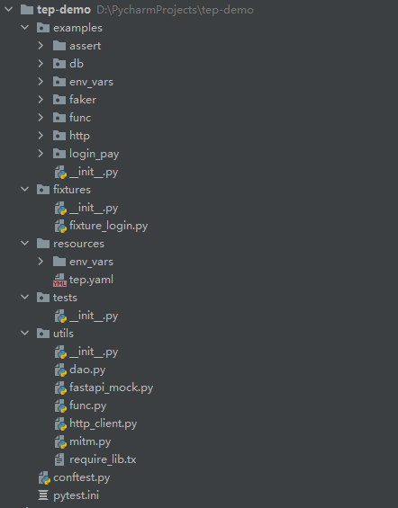
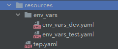

tep¶

联系作者：cekaigang
教程版本：0.11.0
更新时间：2022年11月26日
tep简介¶
tep是Try Easy
Pytest的首字母缩写，是一款基于pytest测试框架的测试工具，集成了各种实用的第三方包和优秀的自动化测试设计思想，帮你快速实现自动化项目落地。tep的目标是带来pytest测试框架的企业级最佳实践。
快速入门¶
Python版本¶
支持Python3.7+版本，因为pytest7.1.1要求必须Python3.7+版本。
安装tep¶
Windows
pip install tep

Mac
建议使用虚拟环境，省去折腾环境变量：
python3 -m venv venv
source venv/bin/activate
创建虚拟环境并激活后使用：
pip install tep
tep -V
新建pytest项目¶
tep startproject demo

带上-venv参数，可创建单个项目的Python虚拟环境，并在该项目的虚拟环境中安装tep：
tep startproject demo -venv

使用篇¶
用例集¶
在tests目录下将测试用例按功能模块分成多个用例集：
tests
user
user_main_process.py
user_validate.py
teacher
teacher_main_process.py
teacher_validate.py
student
student_main_process.py
student_validate.py
测试用例¶
用例的基本原则是用例解耦：每个.py文件都是单独的可运行的测试用例。每条测试用例尽量只包含一个test()函数。测试用例由测试标题和测试步骤组成。
测试步骤¶
测试步骤由描述、数据、请求、提取、断言5个部分组成：
## 描述
## 数据
## 请求
response = request(
"{method}",
url="{url}",
headers={headers},
{body_grammar}
)
## 提取
## var = response.jmespath("expression")
## 断言
assert response.status_code < 400
语法约定¶
强烈推荐直接编写Python代码。无需额外学习新语法，精通Python语言和Python库用法，让你的代码能力直线上升。tep编写自动化脚本的方法，是一种追求效率的极速写法。
接口管理¶
不强制做接口单独管理，可以直接写在用例步骤里，不为了代码数据分离而分离。如果想单独管理，可以参考示例代码中的mvc写法。
接口复用¶
接口复用的原则是逻辑相对简单，url+入参+出参，比较固定且重复使用次数很多。符合复用要求的接口可以做成fixture，供测试用例使用。参考fixtures/fixture_login.py脚本：
import jmespath
import pytest
from loguru import logger
from utils.http_client import request
def _jwt_headers(token):
return {"Content-Type": "application/json", "authorization": f"Bearer {token}"}
@pytest.fixture(scope="session")
def login(env_vars):
# 封装登录接口
logger.info("Administrator login")
response = request(
"post",
url=env_vars["domain"] + "/login",
headers={"Content-Type": "application/json"},
json={
"username": "dongfanger",
"password": "123456",
}
)
assert response.status_code < 400
response_token = jmespath.search("token", response.json())
class Clazz:
token = response_token
jwt_headers = _jwt_headers(response_token)
return Clazz
返回值使用类包了一层，一是为了在写代码时会有语法智能补全，二是方便后续扩展，直接给类添加新的属性即可，不影响用例代码。
接口串联¶
得益于一个``.py``文件就是一条用例的约定。接口的串联就能通过函数局部变量进行实现，从上个接口响应中取值，存入变量，放到下个接口的入参中，轻松完成。一个测试步骤只包含一个接口，测试步骤的【提取】就是从当前步骤提取数据，测试步骤的【数据】就是从上一个接口获取数据，这个做法借鉴了JMeter。
环境变量模板¶
在resources/env_vars目录下可以定义多套环境变量模板：

需要用到哪个模板，就在tep.yaml中激活：
env:
active: "dev"
使用环境变量，借助tep内置的env_vars fixture，就像字典一样：
from loguru import logger
def test(env_vars):
logger.info(env_vars["domain"])
logger.info(env_vars["env"])
logger.info(env_vars["db"]["mysql"]["host"])
全局变量¶
env_vars封装了内存字典，提供put()和get()方法进行动态存取。
断言¶
采用Python原生的assert断言。16种常用断言如下：
import allure
@allure.title("等于")
def test_assert_equal():
assert 1 == 1
@allure.title("不等于")
def test_assert_not_equal():
assert 1 != 2
@allure.title("大于")
def test_assert_greater_than():
assert 2 > 1
@allure.title("小于")
def test_assert_less_than():
assert 1 < 2
@allure.title("大于等于")
def test_assert_less_or_equals():
assert 2 >= 1
assert 2 >= 2
@allure.title("小于等于")
def test_assert_greater_or_equals():
assert 1 <= 2
assert 1 <= 1
@allure.title("长度相等")
def test_assert_length_equal():
assert len("abc") == len("123")
@allure.title("长度大于")
def test_assert_length_greater_than():
assert len("hello") > len("123")
@allure.title("长度小于")
def test_assert_length_less_than():
assert len("hi") < len("123")
@allure.title("长度大于等于")
def test_assert_length_greater_or_equals():
assert len("hello") >= len("123")
assert len("123") >= len("123")
@allure.title("长度小于等于")
def test_assert_length_less_or_equals():
assert len("123") <= len("hello")
assert len("123") <= len("123")
@allure.title("字符串相等")
def test_assert_string_equals():
assert "dongfanger" == "dongfanger"
@allure.title("以...开头")
def test_assert_startswith():
assert "dongfanger".startswith("don")
@allure.title("以...结尾")
def test_assert_startswith():
assert "dongfanger".endswith("er")
@allure.title("正则匹配")
def test_assert_regex_match():
import re
assert re.findall(r"don.*er", "dongfanger")
@allure.title("包含")
def test_assert_contains():
assert "fang" in "dongfanger"
assert 2 in [2, 3]
assert "x" in {"x": "y"}.keys()
@allure.title("类型匹配")
def test_assert_type_match():
assert isinstance(1, int)
assert isinstance(0.2, float)
assert isinstance(True, bool)
assert isinstance(3e+26j, complex)
assert isinstance("hi", str)
assert isinstance([1, 2], list)
assert isinstance((1, 2), tuple)
assert isinstance({"a", "b", "c"}, set)
assert isinstance({"x": 1}, dict)
测试报告¶
allure下载地址：https://github.com/allure-framework/allure2/releases
解压后将bin目录添加到系统环境变量Path。
在pytest命令行添加参数--tep-reports就能一键生成Allure测试报告，并且会把请求入参和响应出参，记录在测试报告中。
pytest --tep-reports
若想在资源管理器中打开，需要执行命令allure open 报告所在文件夹名才能正常打开。

这是因为allure必须启动server才能浏览，allure open启动的是自带的server，PyCharm右键也能直接启动server。
自定义request¶
编辑utils/http_client.py对request进行自定义。
Pairwise算法生成功能用例¶
Pairwise算法能针对多条件组合用例，从笛卡尔积中，根据两两组合过滤，生成更为精简的测试用例。
输入3个条件：
‘M’, ‘O’, ‘P’
‘W’, ‘L’, ‘I’
‘C’, ‘E’
def test_case():
"""自动生成功能测试用例"""
pl = [['M', 'O', 'P'], ['W', 'L', 'I'], ['C', 'E']]
a = func.case_pairwise(pl) # 笛卡尔积:18 过滤后:9
print()
for i in a:
print(i)
笛卡尔积有18种组合，经过Pairwise算法过滤后，只会保留9组用例：
cartesian product total:18
100% [■■■■■■■■■■]
pair total:9
('M', 'W', 'E')
('M', 'L', 'E')
('M', 'I', 'C')
('O', 'W', 'E')
('O', 'L', 'E')
('O', 'I', 'C')
('P', 'W', 'C')
('P', 'L', 'C')
('P', 'I', 'E')
录制流量生成自动化用例¶
①手动设置系统代理。
②命令行cd到utils目录下，在mitm.py中设置过滤域名。
③mitmdump -s mitm.py开始录制。
用例会自动生成到tests/mitm文件夹下。
原理篇¶
代码是最好的文档：
https://github.com/dongfanger/tep
pypi库¶
tep可以通过pip直接安装，这是因为源码上传到了pypi官方库。上传借助了poetry来实现：
poetry install --no-dev
poetry build
poetry publish
执行这3条命令，然后输入pypi注册的用户名和密码即可。
项目脚手架¶
tep能从系统命令行来调用，也是借助poetry来实现的：
## pyproject.toml
[tool.poetry.scripts]
tep = "tep.cli:main"
这相当于注册了系统命令，调用后会执行tep.cli:main函数：
import argparse
import sys
from tep import __description__, __version__
from tep.scaffold import init_parser_scaffold, main_scaffold
def main():
"""Parse command line options and run commands.
"""
parser = argparse.ArgumentParser(description=__description__)
parser.add_argument(
"-V", "--version", dest="version", action="store_true", help="show version"
)
subparsers = parser.add_subparsers(help="sub-command help")
sub_parser_scaffold = init_parser_scaffold(subparsers)
if len(sys.argv) == 1:
# tep
parser.print_help()
sys.exit(0)
elif len(sys.argv) == 2:
# print help for sub-commands
if sys.argv[1] in ["-V", "--version"]:
# tep -V
print(f"{__version__}")
elif sys.argv[1] in ["-h", "--help"]:
# tep -h
parser.print_help()
elif sys.argv[1] == "startproject":
# tep startproject
sub_parser_scaffold.print_help()
sys.exit(0)
args = parser.parse_args()
if args.version:
print(f"{__version__}")
sys.exit(0)
if sys.argv[1] == "startproject":
main_scaffold(args)
startproject会调用main_scaffold函数，这里面的逻辑很简单，就是创建文件夹和文件，文件内容是已经写好的样板代码。
变量池¶
变量池是在tep/fixture.py中实现的：
class TepVars:
def __init__(self):
self.vars_ = {}
def put(self, key, value):
self.vars_[key] = value
def get(self, key):
value = ""
try:
value = self.vars_[key]
except KeyError:
logger.error(f"env_vars doesnt have this key: {key}")
return value
它就是一个具有get和put方法的类，变量存在self.vars_这个全局字典中，所有脚本共享同一个变量池。
环境变量模板¶
内置env_vars fixture：
#!/usr/bin/python
# encoding=utf-8
"""
@Author : dongfanger
@Date : 2020/12/30 9:30
@Desc : 预置fixture
"""
import os
import pytest
import yaml
from loguru import logger
from tep.config import tep_config, Config
@pytest.fixture(scope="session")
def env_vars():
"""环境变量，读取resources/env_vars下的变量模板"""
class Clazz(TepVars):
def dict_(self):
env_active = tep_config()['env']["active"]
env_filename = f"env_vars_{env_active}.yaml"
with open(
os.path.join(Config.project_root_dir, "resources", "env_vars", env_filename)) as f:
return yaml.load(f.read(), Loader=yaml.FullLoader)
return Clazz().dict_()
env_vars根据tep.yaml配置的active，获取对应的环境变量模板，解析yaml，返回字典。
fixture自动导入¶
在conftest.py中，添加了tep插件：
#!/usr/bin/python
# encoding=utf-8
from tep.plugin import tep_plugins
# 加载tep插件
pytest_plugins = tep_plugins()
使用inspect.stack()[1]反推项目路径：
def tep_plugins():
caller = inspect.stack()[1]
Config.project_root_dir = os.path.dirname(caller.filename)
plugins = fixture_paths() # +[其他插件]
return plugins
将fixture路径作为插件加载，一个是项目目录下的fixtures包，一个是tep里面的fixture模块：
def fixture_paths():
"""
fixture路径，1、项目下的fixtures；2、tep下的fixture；
:return:
"""
_fixtures_dir = os.path.join(Config.project_root_dir, "fixtures")
paths = []
# 项目下的fixtures
for root, _, files in os.walk(_fixtures_dir):
for file in files:
if file.startswith("fixture_") and file.endswith(".py"):
full_path = os.path.join(root, file)
import_path = full_path.replace(_fixtures_dir, "").replace("\\", ".")
import_path = import_path.replace("/", ".").replace(".py", "")
paths.append("fixtures" + import_path)
# tep下的fixture
paths.append("tep.fixture")
return paths
自定义request¶
在utils/http_client中封装了requests.request：
def request(method, url, **kwargs):
start = time.process_time()
response = requests.request(method, url, **kwargs) # requests.request原生用法
end = time.process_time()
elapsed = str(decimal.Decimal("%.3f" % float(end - start))) + "s"
request_log = f"{method} {url} status_code:{response.status_code} response:{response.text} elapsed:{elapsed}"
logger.info(request_log)
allure.attach(request_log, f'request & response', allure.attachment_type.TEXT)
return response
没有对requests做任何改动，只加了日志和报告内容。这符合tep尊重原生用法的原则，减少额外的语法记忆负担。
一键生成Allure测试报告¶
--tep-reports是通过pytest plugin来实现的：
#!/usr/bin/python
## encoding=utf-8
import os
import shutil
import tempfile
import allure_commons
from allure_commons.logger import AllureFileLogger
from allure_pytest.listener import AllureListener
from allure_pytest.plugin import cleanup_factory
from tep.fixture import Project
from tep.func import current_time
allure_temp = tempfile.mkdtemp()
class Plugin:
@staticmethod
def pytest_addoption(parser):
parser.addoption(
"--tep-reports",
action="store_const",
const=True,
help="Create tep allure HTML reports."
)
@staticmethod
def _tep_reports(config):
if config.getoption("--tep-reports") and not config.getoption("allure_report_dir"):
return True
else:
return False
@staticmethod
def pytest_configure(config):
if Plugin._tep_reports(config):
test_listener = AllureListener(config)
config.pluginmanager.register(test_listener)
allure_commons.plugin_manager.register(test_listener)
config.add_cleanup(cleanup_factory(test_listener))
clean = config.option.clean_alluredir
file_logger = AllureFileLogger(allure_temp, clean)
allure_commons.plugin_manager.register(file_logger)
config.add_cleanup(cleanup_factory(file_logger))
@staticmethod
def pytest_sessionfinish(session):
if Plugin._tep_reports(session.config):
reports_dir = os.path.join(Project.dir, "reports")
new_report = os.path.join(reports_dir, "report-" + current_time().replace(":", "-").replace(" ", "-"))
if os.path.exists(reports_dir):
his_reports = os.listdir(reports_dir)
if his_reports:
latest_report_history = os.path.join(reports_dir, his_reports[-1], "history")
shutil.copytree(latest_report_history, os.path.join(allure_temp, "history"))
os.system(f"allure generate {allure_temp} -o {new_report} --clean")
shutil.rmtree(allure_temp)
通过pytest_sessionfinish钩子函数，在pytest运行结束时，生成测试报告。同时会把历史数据保留下来，以在Allure报告的趋势图中进行展示。